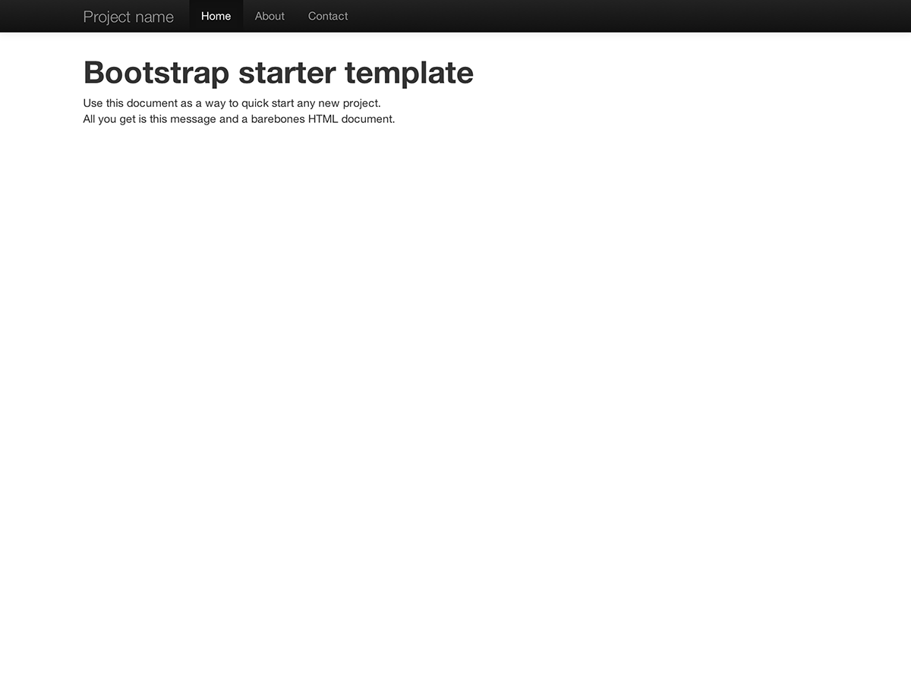
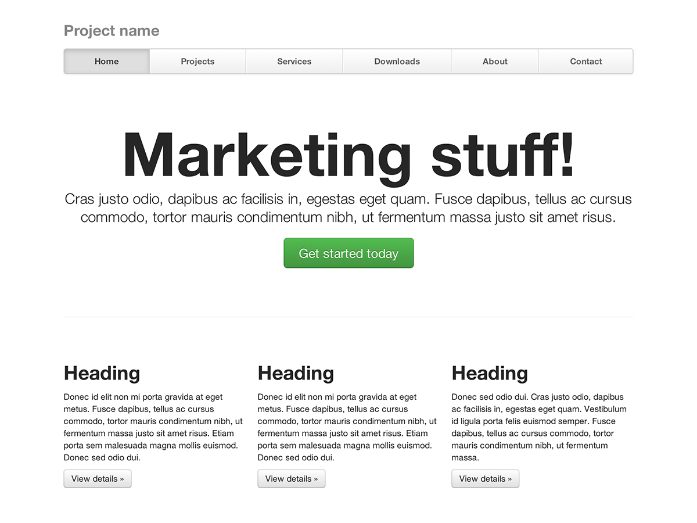

1. 다운로드
다운로드하기 전에 우선 코드 편집기가 (Sublime Text 2를 추천) 필요하고 HTML과 CSS를 어느정도 알아야 한다. 여기서 소스파일을 일일이 설명하지 않지만, 다운받으면 소스파일이 들어있다. 컴파일된 부트스트랩 파일을 가지고 시작하는 방법을 보인다.
컴파일된 결과 다운로드
가장 빨리 시작하는 방법: CSS와 자바스크립트와 그림파일을 컴파일하고 크기를 최소화한 결과를 받는다. 문서나 원래 소스파일은 들어있지 않다.
2. 파일 구조
다운로드한 내용 안에는 다음과 같은 파일 구조가 있다. 공통 파일들을 논리적으로 구분했고, 컴파일한 파일과 크기를 최소화한 파일이 함께 들어있다.
다운로드한 파일의 압축을 풀면, 이런 (컴파일된) 부트스트랩 구조가 보인다.
bootstrap/
├── css/
│ ├── bootstrap.css
│ ├── bootstrap.min.css
├── js/
│ ├── bootstrap.js
│ ├── bootstrap.min.js
└── img/
├── glyphicons-halflings.png
└── glyphicons-halflings-white.png
가장 기본적인 부트스트랩 형태이다. 컴파일된 파일들은 거의 모든 웹프로젝트에서 바로 사용할 수 있다. 컴파일한 (bootstrap.*) CSS와 자바스크립트와 더불어 컴파일하고 크기를 최소화한 (bootstrap.min.*) CSS와 자바스크립트도 제공한다. 그림파일은 PNG를 압축하는 맥 어플리케이션 ImageOptim을 사용하여 압축했다.
모든 자바스크립트 플러그인은 jQuery가 필요하니 명심하라.
3. 들어있는 내용
부트스트랩에는 들어있는 HTML, CSS, 자바스크립트를 상단에 있는 몇개 문서로 구분하여 정리한 다.
문서 구분
틀 만들기
본문의 글꼴과 배경 초기화하는 전체 스타일, 링크 스타일, 격자 방식, 두가지 간단한 레이아웃.
기본 CSS
타이포그래피, 코드, 표, 양식, 버튼 같은 평범한 HTML 태그의 스타일. 훌륭한 작은 아이콘 모음 글리피콘스도 포함.
화면 구성요소
탭, 알약 (pill), 탐색막대 (navbar), 경고, 페이지 제목 등 평범한 화면 구성요소의 기본 스타일.
자바스크립트 플러그인
화면 구성요소와 비슷하게 툴킨, 팝오버, 모달 등 동작하는 구성요소를 만드는 자바스크립트 플러그인들이다.
구성요소 목록
화면 구성요소와 자바스크립트 플러그인이 함게 다음과 같은 인터페이스를 제공한다.
- 버튼 그룹
- 버튼 드롭다운
- 탐색 (nav) 탭, 알약 (pill), 목록
- 탐색막대 (navbar)
- 라벨
- 배지
- 페이지 제목과 히어로 유닛 (hero unit)
- 미리보기 (thumbnail)
- 경고
- 진행표시줄
- 모달
- 드롭다운
- 툴팁
- 팝오버
- 아코디언
- 회전광고판 (carousel)
- 자동완성 (typeahead)
미래에는 이들 구성요소를 하나씩 자세하게 둘러볼 계획이다. 그때까지는 현재 문서에서 구성요소를 사용하고 변경하는 정보를 구하라.
4. 기초 HTML 견본
본격적으로 시작하기 앞서 부트스트랩을 집어넣어 보자. 우리는 파일 구조에서 언급한 모든것을 포함하는 기본 HTML 견본을 이용한다.
일반적인 HTML 파일은 이렇게 생겼다.
<!DOCTYPE html>
<html>
<head>
<title>부트스트랩 개론 견본</title>
<meta name="viewport" content="width=device-width, initial-scale=1.0">
</head>
<body>
<h1>헬로우, 월드!</h1>
<script src="http://code.jquery.com/jquery.js"></script>
</body>
</html>
여기에 부트스트랩을 적용하려면, 적절한 CSS 파일과 자바스크립트 파일을 추가하면 된다.
<!DOCTYPE html>
<html>
<head>
<title>부트스트랩 개론 견본</title>
<meta name="viewport" content="width=device-width, initial-scale=1.0">
<!-- 부트스트랩 -->
<link href="css/bootstrap.min.css" rel="stylesheet" media="screen">
</head>
<body>
<h1>헬로우, 월드!</h1>
<script src="http://code.jquery.com/jquery-latest.js"></script>
<script src="js/bootstrap.min.js"></script>
</body>
</html>
그러면 끝이다! 추가한 두 파일을 가지고 부트스트랩을 사용하여 사이트나 어플리케이션을 개발할 수 있다.
한글 글꼴! 가독성을 높이고 기본 설정 사용시 크롬에서 본문 제목의 공백 뒤에 콜론이 추가되는 현상을 없애기위해 이 페이지는 나눔고딕과 맑은 고딕 글꼴을 사용한다. 직접 설정을 변경하려면, bootstrap.css와 bootstrap.min.css에서 3번 나오는 font-family: "Helvetica Neue", Helvetica, Arial, sans-serif;를 모두 font-family: NanumGothic, 나눔고딕, "Malgun Gothic", "맑은 고딕", sans-serif;로 수정한다. 컴파일된 결과를 다운로드하면, 이미 글꼴 설정을 변경한 bootstrap-ko.css와 bootstrap-ko.min.css 파일이 들어있다.
5. 예제
기본 틀을 지나 몇가지 레이아웃 예제로 넘어간다. 이 예제를 예제로만 참고하고, 최종 결과로 그대로 사용하기 않길 바란다.
-

시작 틀
모든 부트스트랩 CSS와 자바스크립트를 포함한 HTML 문서 골격.
-

기초 마케팅 사이트
핵심 내용을 위한 히어로 유닛과 세 보조 영역을 포함한다.
-

유동 레이아웃
새로운 반응형 유동 격자 방식을 사용하여 물 흐르듯 매끄러운 레이아웃을 만든다.
-

폭이 좁은 마케팅
작은 프로젝트나 팀을 위한 경량의 날씬한 마케팅 틀.
-

그럴듯한 탐색
수정한 탐색막대 안에 폭이 동일한 탐색 링크가 있는 마케팅 페이지.
-

로그인
큰 맞춤 양식 입력요소와 유연한 레이아웃의 로그인 양식 골격.
-

고정 꼬리말
사용자 화면 밑바닥에 고정높이 꼬리말을 고정한다.
-

회전광고판
눈에 띄는 회전광고로 기초 마케팅 사이트에 움직임 가미.
다음은?
설명과 예제 그리고 코드를 보려고 문서로 가거나, 다음 프로젝트에 사용할 부트스트랩을 맞추려 건너뛸 수 있다.
부트스트랩 문서로 부트스트랩 맞춤 다운로드